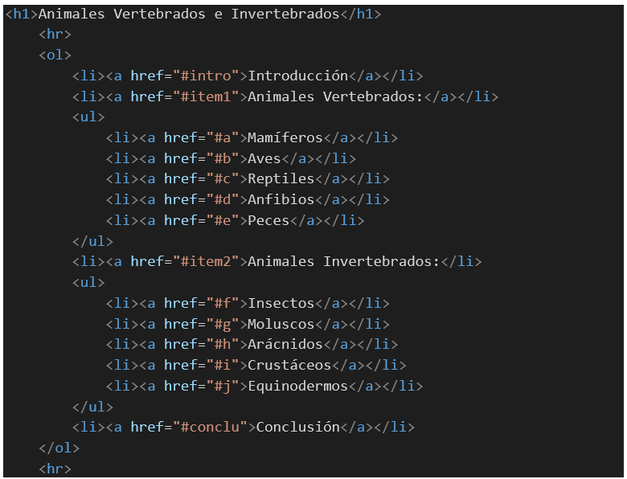
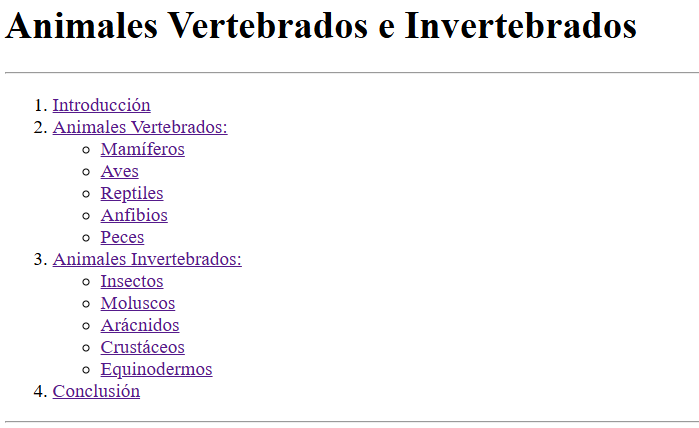
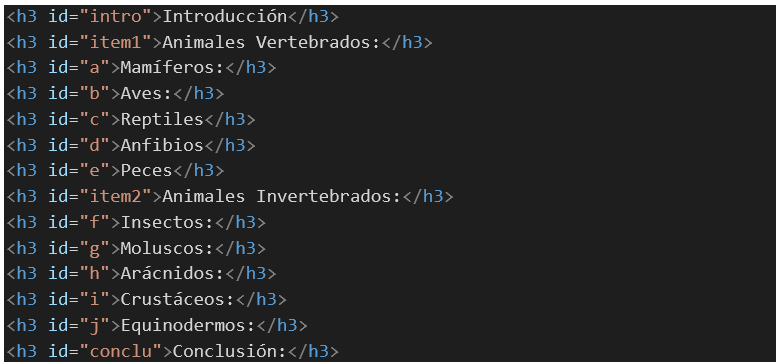

Un ancla en HTML es un elemento que permite crear enlaces dentro de una página web o hacia otras páginas. Se utiliza para conectar un texto o una imagen con otra ubicación, ya sea en la misma página o en una página diferente.
Se refiere a enlaces que dirigen al usuario desde la página web actual hacia una página completamente diferente, ya sea en el mismo sitio web o en un sitio web externo. Se define de la siguiente forma:
También se pueden usar anclas para saltar a una parte específica de la misma página. Para ello, debes definir el atributo id (identificador) dentro del elemento que deseas enlazar y luego, llamarlo desde el atributo href de la etiqueta <a>.
Crear un menú de opciones utilizando listas ordenadas y no ordenadas anidadas como muestra la imagen. Luego, agregar para cada elemento de la lista el atributo href con una palabra o letra única dentro del documento HTML
La lista deberá ejecutarse en el navegador de la siguiente forma:
Ahora, copia el texto a continuación, pégalo debajo del código anterior y agrega las etiquetas correspondientes para los títulos y los párrafos.
Introducción:
El reino animal es uno de los más diversos y complejos dentro de la clasificación de los seres vivos. Los animales pueden encontrarse en casi todos los hábitats de la Tierra, desde las profundidades oceánicas hasta las cumbres montañosas. Una de las formas más fundamentales de clasificar a los animales es dividiéndolos en vertebrados e invertebrados, basándose en la presencia o ausencia de una columna vertebral. Esta clasificación no solo nos ayuda a entender mejor la biología y la evolución de las distintas especies, sino que también nos ofrece una visión sobre cómo se han adaptado a su entorno a lo largo del tiempo.
Animales Vertebrados:
Los animales vertebrados son aquellos que poseen un esqueleto interno compuesto por huesos o cartílagos, lo cual les otorga una estructura rígida y un soporte para sus órganos. Esta característica principal, la presencia de una columna vertebral, es lo que distingue a los vertebrados de otros grupos de animales. Dentro de esta clasificación, podemos encontrar a los mamíferos, aves, reptiles, anfibios y peces.Mamíferos:Animales Invertebrados:
Los mamíferos son animales vertebrados que se caracterizan por tener glándulas mamarias, las cuales producen leche para alimentar a sus crías. Además, la mayoría de los mamíferos tiene pelo o pelaje y un sistema circulatorio cerrado con un corazón de cuatro cámaras. Ejemplos de mamíferos incluyen al ser humano, el león y el delfín.
Aves:
Las aves son vertebrados que poseen plumas, alas y un pico sin dientes. La mayoría son capaces de volar, aunque existen algunas especies que han perdido esta capacidad, como el avestruz. Las aves se reproducen mediante huevos, que generalmente incuban en nidos. Ejemplos de aves son el águila, el pingüino y el colibrí.
Reptiles:
Los reptiles son animales vertebrados que tienen la piel cubierta de escamas y que suelen habitar en ambientes cálidos. A diferencia de los mamíferos y aves, los reptiles son ectotermos, es decir, dependen del calor ambiental para regular su temperatura corporal. Ejemplos de reptiles son la serpiente, el cocodrilo y la tortuga.
Anfibios:
Los anfibios son vertebrados que tienen una vida dual, es decir, pasan parte de su vida en el agua y parte en la tierra. Su piel es delgada y húmeda, lo que les permite respirar a través de ella, además de por los pulmones en su etapa adulta. Ejemplos de anfibios son la rana, el sapo y la salamandra.
Peces:
Los peces son vertebrados que viven en el agua y respiran a través de branquias. Su cuerpo está generalmente cubierto de escamas, y tienen aletas para moverse. Los peces pueden ser de agua dulce o salada. Ejemplos de peces son el salmón, el tiburón y el pez payaso.
Los invertebrados son animales que carecen de columna vertebral y esqueleto interno. A pesar de no tener una estructura ósea rígida, muchos invertebrados tienen exoesqueletos o estructuras de soporte como conchas o caparazones. Este grupo incluye una gran diversidad de organismos, tales como insectos, moluscos, arácnidos, crustáceos y equinodermos.
Insectos:Conclusión:
Los insectos son invertebrados que poseen un cuerpo dividido en tres partes principales: cabeza, tórax y abdomen. Tienen seis patas y, en su mayoría, un par de antenas y uno o dos pares de alas. Son el grupo más numeroso de animales en el planeta. Ejemplos de insectos son la abeja, la mariposa y la hormiga.
Moluscos:
Los moluscos son invertebrados que generalmente tienen un cuerpo blando, y muchos de ellos están protegidos por una concha externa. Este grupo incluye a los caracoles, las almejas y los pulpos. Los moluscos pueden encontrarse en ambientes acuáticos y terrestres. Ejemplos de moluscos son el caracol, la ostra y el calamar.
Arácnidos:
Los arácnidos son invertebrados que tienen ocho patas y un cuerpo dividido en dos segmentos principales: el cefalotórax y el abdomen. No tienen antenas ni alas, y muchos de ellos son depredadores que se alimentan de insectos y otros pequeños animales. Ejemplos de arácnidos son la araña, el escorpión y la garrapata.
Crustáceos:
Los crustáceos son invertebrados que generalmente viven en el agua, aunque algunos, como los cangrejos, también habitan en tierra firme. Tienen un exoesqueleto duro y su cuerpo está segmentado en cabeza, tórax y abdomen. Ejemplos de crustáceos son el cangrejo, la langosta y el camarón.
Equinodermos:
Los equinodermos son invertebrados marinos que tienen un cuerpo simétrico en cinco partes y suelen poseer un esqueleto interno formado por placas calcáreas. Se desplazan mediante un sistema de tubos llamado sistema ambulacral. Ejemplos de equinodermos son la estrella de mar, el erizo de mar y el pepino de mar.
La clasificación de los animales en vertebrados e invertebrados nos ofrece una visión profunda sobre la variedad de formas y adaptaciones que existen en el reino animal. Cada grupo, con sus características únicas, ha desarrollado estrategias para sobrevivir y prosperar en una amplia gama de entornos, desde los océanos más profundos hasta las tierras más áridas. Comprender esta clasificación no solo nos ayuda a apreciar la biodiversidad del planeta, sino que también nos permite reflexionar sobre la importancia de conservar estos organismos y sus hábitats para las generaciones futuras.
En cada elemento de título agrega el id correspondiente para esa sección de la página, según sea la palabra o letra asignada en el atributo href de la lista. Cada título del documento HTML quedaría así:
Ahora notarás que en el navegador, cuando haces clic a cualquiera de los enlaces, te llevará a la sección correspondiente.